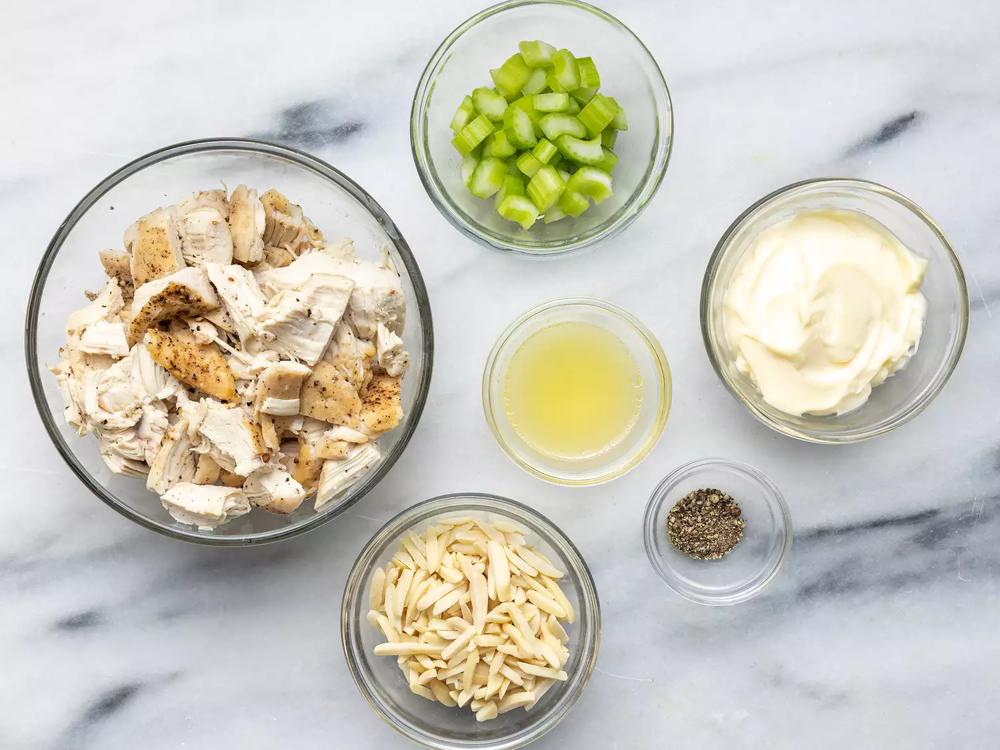
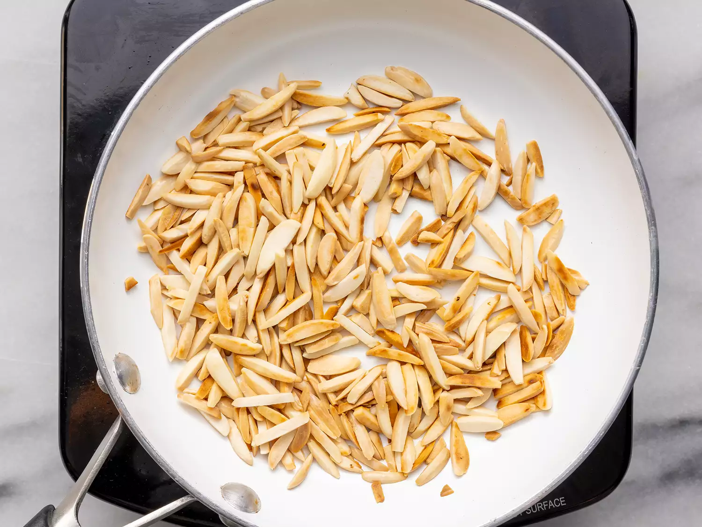
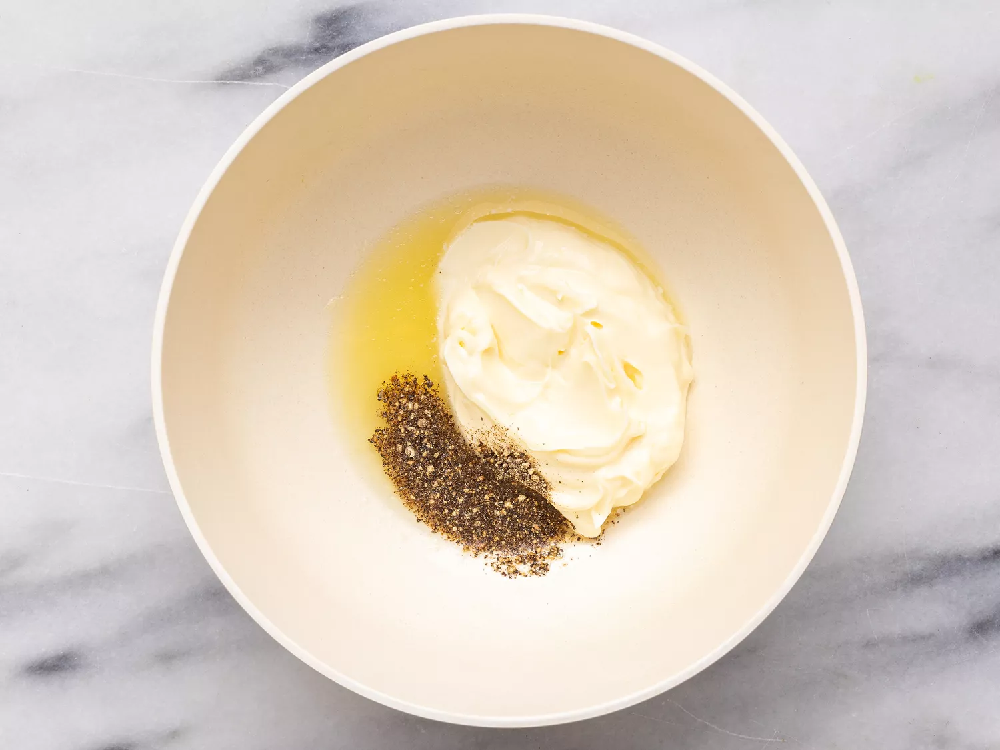
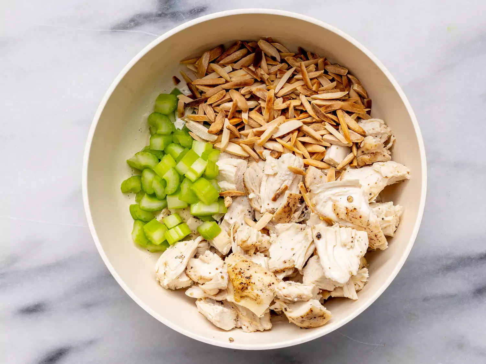

Gather all ingredients.
Place almonds in a frying pan. Toast over medium-high heat, shaking frequently. Watch carefully, as they burn easily.
Mix together mayonnaise, lemon juice, and pepper in a medium bowl.
Toss with chicken, toasted almonds, and celery.
Enjoy!